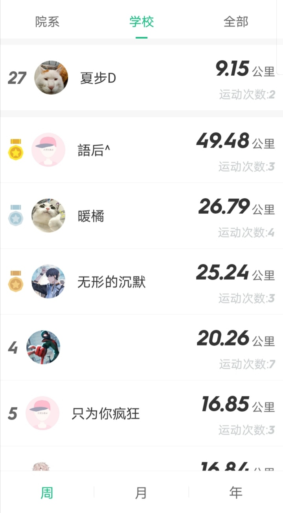
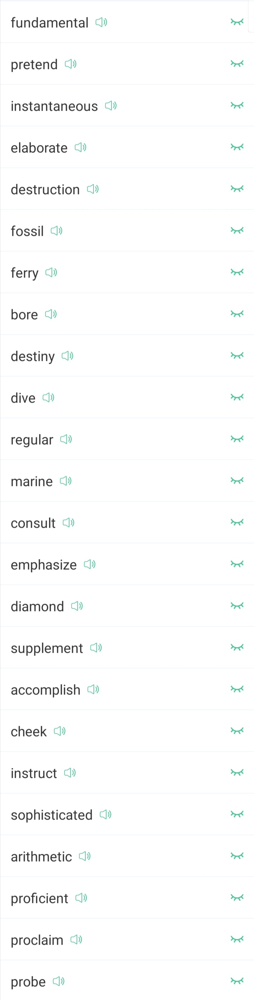

英语单词背诵Day02
前言
今天晚上跑步前点了外卖，本来与设想是“跑上两公里，费时15分钟，回到寝室还能洗个澡，费时5分钟，然后外卖正好在我下单送达20分钟送达。”
结果现实是我正好听着歌跑嗨了，直接跑了4.5公里才停下来。回到宿舍外卖已经冷掉了。就这样，我掺和着热水把这冷外卖一起吃下去的。说实话还真难吃，吃了一半就丢了，可真是心疼。我好久没有这样浪费过粮食了。
话说回来，学校跑步的狠人还真是多，我还想着能进校排名前五的，现在看了看排名，觉得希望不大了….
今日单词
list02
- telescope 望远镜
- dialog 对话
- gulf 深渊；旋涡；海沟
- misfortune 不幸的
- depress 压抑；使沮丧
- depression 忧愁；沮丧
- tackle 处理（又让我想起”buckle”这个单词）
- insane 神经病的；疯狂的
- indispensable 不可或缺的
- communicate 通讯；交流
- sophisticated 复杂的；久经世故的
- herd 兽群；畜群
- marine 海产的；航海的（为啥潜意识里我老是和”miracle”这个单词联系在一起呢？）
- masterpiece 杰作；著作（OS：大师碎片？）
- campus 大学
- gallery 画廊，美术馆
- trifle 小事儿，琐事儿（事(trifle)不过三(triple)）
- represent 代表
pretend假装；伪装probe调查；探测- accelerate 加速
- gadget 小玩意儿；小配件（音译：白给的）
- fireplace 壁炉
consult查阅；商量；请教- bind 结合；装订；绑（音译就像“绑”）
- knock 敲打；敲击
- bay 海湾；犬吠（海湾传来狗叫声）
emphasize着重；强调- subject 科目；主题；主题
- membership 资格；会员资格
- domestic 国内的；家庭的
- mask 面具
- compel 强迫
- endearing 可爱的；讨人喜欢的（比如这个女孩子：she is vary endearing girl!）
- grace 优雅的
- fable 寓言；无稽之谈（“肥波”讲的话是无稽之谈）
- transfer 转移；移动
（附：transform：变形；translate：翻译）- convenient 方便的
- porter 门童；服务员；搬运工
- senate 参议院
- widow 寡妇
- margin 边缘；理论；页边的空白
extent程度；范围；长度- male 雄性；男性（female：雌性；女性）
- deny 否认
- awe 敬畏；惊叹（嗷··）
- specialize 专门从事；专政
- soil 土壤
- bond 债券；组合；纽带（感觉和”bind”好像···）
- racial 人种；种族（种族歧视：racial discrimination）
- impress 有印象的；印记；痕迹
- proficient 熟练的（熟练才能产生利润(profit)）
instantaneous瞬间的；（中间有两个tan，说明不存在）miserable贫瘠的；悲惨的（mis+ser+able）fossil化石；守旧的；陈腐的- engine 引擎
- fact 事实上
- heir 继承人
- revolution 革命；循环；旋转
proclaim宣告；声明；表明；赞扬- jolly 开心的；愉快的（是不是和joy一个意思呢？）妹妹吃到姐姐给的果冻(jelly)表现出快乐(jolly)的表情
- sting 刺；刺痛
- liver 肝脏
- coin 硬币
- regular 规律的；定期的
destiny命运；太名- aural 听觉的；气味的；气氛的
- sock 短袜；一击
- vegetable 蔬菜
ultimate最终的；极限的；根本的

后感
感觉有点力不从心了，又要回到之前那种心不在焉的背单词状态了，这次背单词记不住的单词更多了，但是我相信，这次不同于往日，英语四级必须拿下！！
重复记忆签到表格
| 日期 | 再次记忆 |
|---|---|
| 2021年3月10日 | √ |
| 2021年3月11日 | √ |
不会的单词更多了，要坚持背诵！！
